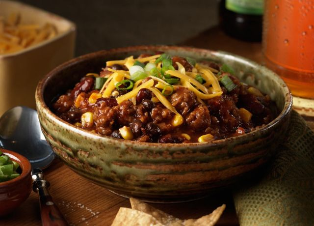

MVP Chili Recipe

While chili snobs will argue over what true chili really is,
you'll be enjoying this amazing recipe that brings together many well-loved (if hotly debated) chili ingredients.
The Johnsonville Italian Sausage gives the dish an extra boost of flavor and heat that will make all chili fans want more.
Ingredients
- 2 (19 ounce) packages Johnsonville Hot or Mild Italian Sausage Links, casings removed
- 1 large onion, diced
- 3 garlic cloves, minced
- 1 tablespoon chili powder, or more to taste
- 1/4th teaspoon cumin
- 12 ounces beer or beef stock
- 1 (28 ounce) can crushed tomatoes
- 2 tablespoons tomato paste
- 1 (16 ounce) can red kidney beans, drained and rinsed
- 1 (15.25 ounce) can black beans, drained and rinsed
- 1 1/2 cups fresh or frozen whole kernel corn
- Salt and pepper to taste
Steps
- In a soup kettle or Dutch oven,
cook sausage over medium heat until no longer pink and lightly browned.
Add onions and garlic; continue to cook and stir until tender.
- Stir in beer and allow to simmer for 5 minutes. Add tomatoes and tomato paste, cook uncovered for 8 to 10 minutes.
Stir in remaining ingredients and heat through. Salt and pepper to taste. Serve.
Go back to main page